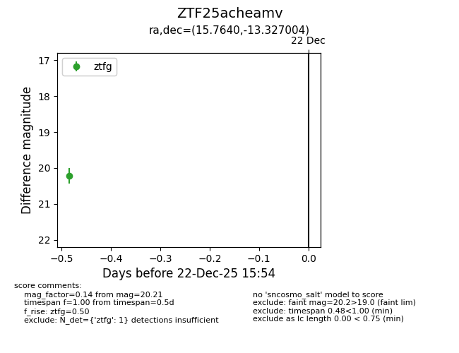
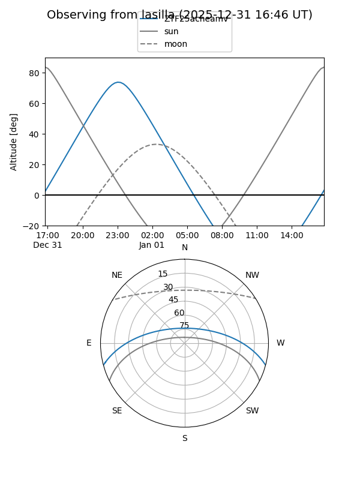

ZTF25acheamv
Target ZTF25acheamv at 2025-12-24 16:17
Aliases and brokers:
FINK: fink-portal.org/ZTF25acheamv
Lasair: lasair-ztf.lsst.ac.uk/objects/ZTF25acheamv
ALeRCE: alerce.online/object/ZTF25acheamv
alt names
ZTF25acheamv (ztf,fink_ztf)
Coordinates:
equatorial (ra, dec) = 15.7640,-13.32700
equatorial (HMS+DMS) = 01:03:03.36,-13:19:37.21
galactic (l, b) = (134.6373,-75.93403)
Flags:
Photometry:
last ztfg=20.21
1 ztfg detections
Lightcurve

Visibility


Additional plots